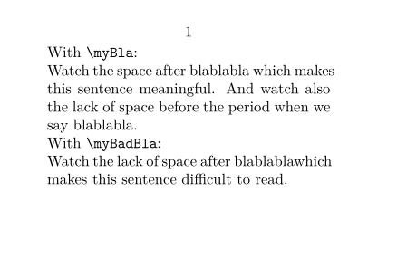

The macro \autoinsertnextspace conditionally adds a space, depending on the next token. This is very useful when defining macro commands as short hands for text (or other expressions used within text), since by default TeX ignores spaces after a command macro. Compare the following two definitions.
-
\setuppapersize[A8,landscape] \define\myBla{blablabla\autoinsertnextspace} \define\myBadBla{blablabla} \starttext With \type{\myBla}: Watch the space after \myBla which makes this sentence meaningful. And watch also the lack of space before the period when we say \myBla. With \type{\myBadBla}: Watch the lack of space after \myBadBla which makes this sentence difficult to read. \stoptext
- 